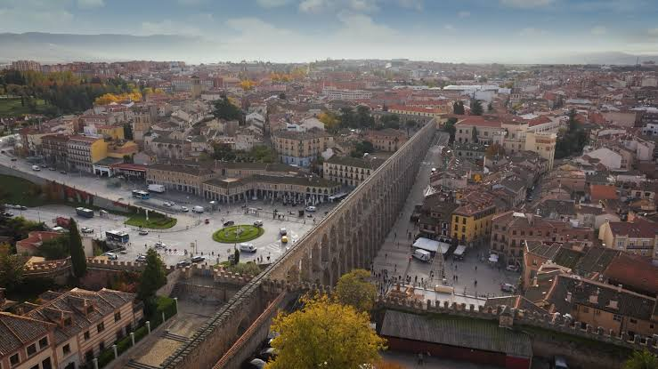
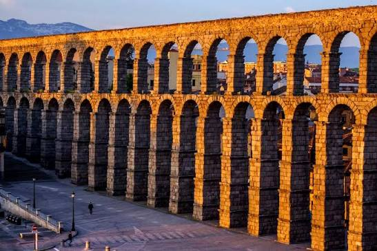

El Acueducto de Segovia es un acueducto que llevaba agua a la ciudad española de Segovia hasta 1973.[1] Su construcción data de principios del siglo II d. C., a finales del reinado del emperador Trajano o principios del de Adriano, durante el imperio romano. La parte más visible, y por lo tanto famosa, es la arquería que cruza la plaza del Azoguejo.
El acueducto de Segovia conduce las aguas del manantial de la Fuenfría, situado en la sierra cercana a 17 kilómetros de la ciudad, en un paraje denominado La Acebeda. Recorre más de 15 km antes de llegar a la ciudad. El agua se recoge primeramente en una cisterna conocida con el nombre de "El Caserón", para ser conducida a continuación por un canal de sillares hasta una segunda torre (llamada Casa de Aguas), donde se decanta y desarena, para continuar su camino. Después recorre 813 m (con una pendiente de un 1 %)[6] hasta lo alto del Postigo (el espolón rocoso sobre el que se asentaba la ciudad en torno al Alcázar).
Volver